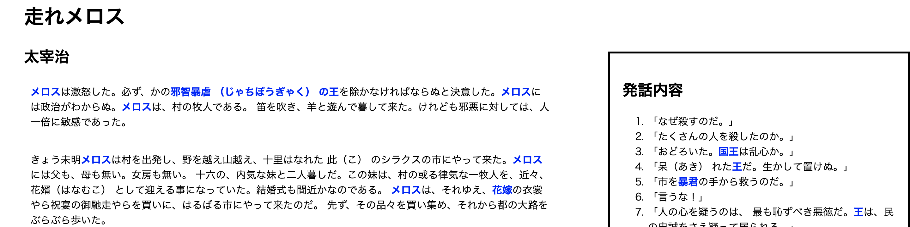
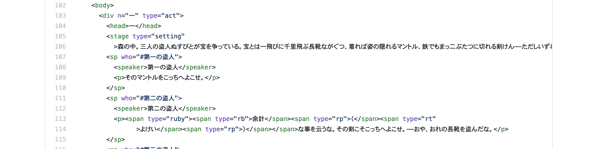

<div class="bd-example">
  <div id="carouselExampleCaptions" class="carousel slide" data-ride="carousel">
    <ol class="carousel-indicators">
      <li data-target="#carouselExampleCaptions" data-slide-to="0" class="active"></li>
      <li data-target="#carouselExampleCaptions" data-slide-to="1"></li>
      <li data-target="#carouselExampleCaptions" data-slide-to="2"></li>
    </ol>
    <div class="carousel-inner">
      <div class="carousel-item active">
        
      </div>
      <div class="carousel-item">
        
      </div>
      <div class="carousel-item">
        
      </div>
    </div>
    <a class="carousel-control-prev" href="#carouselExampleCaptions" role="button" data-slide="prev">
      <span class="carousel-control-prev-icon" aria-hidden="true"></span>
      <span class="sr-only">Previous</span>
    </a>
    <a class="carousel-control-next" href="#carouselExampleCaptions" role="button" data-slide="next">
      <span class="carousel-control-next-icon" aria-hidden="true"></span>
      <span class="sr-only">Next</span>
    </a>
  </div>
</div>

<div class="container my-5">

  <p>&emsp;青空文庫テキストをより便利にする（機械可読性を高める）ためのプロジェクト</p>

  <div class="list-group">
    <a href="https://github.com/TEI-EAJ/aozora_tei" class="list-group-item list-group-item-action">GitHub</a>
    <a href="https://github.com/TEI-EAJ/jp_guidelines" class="list-group-item list-group-item-action">日本語ガイドライン</a>
    <a href="https://github.com/TEI-EAJ/auto_aozora_tei" class="list-group-item list-group-item-action">青空文庫テキストのTEI自動化プロジェクト</a>
  </div>

</div>
